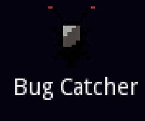
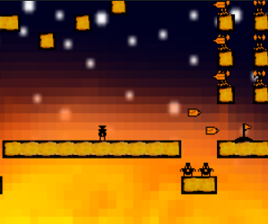
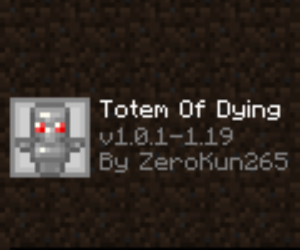
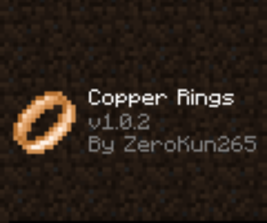
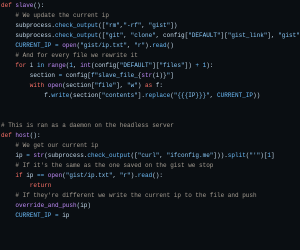
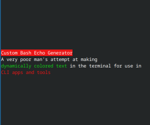

My Projects (Big and small)

BugCatcher
- 🔎 A 2d Point and click game made in a day for the ZenoJam 5(May 2022)
- 🧩 Made with the Godot Game Engine
- 🕒 Time spent: 12h
- 🌐 Itch.io page

Sun Core
- 🔎 A 2d platformer/rage game made in 3 days for the Ludum Dare 48 Jam (April 2021)
- 🧩 Made with the Python Programming Language and the Pygame framework
- 🕒 Time spent: ~50h
- 🌐 Itch.io page

Totem Of Dying
- 🔎 A Minecraft mod that adds a Totem Of Dying to the game, inspired by a Youtube comment (October 2022)
- 🧩 Made with the Java Programming Language and the FabricMC mod loader
- 🕒 Time spent: less than a day, might update in the future
- 🌐 GitHub Page and Curseforge Page

Copper Rings
- 🔎 A Fabric mod that adds copper rings for bonus effects on the player (October 2022)
- 🧩 Made with the Java Programming Language and the FabricMC mod loader
- 🕒 Cool concept, never fully explored, might update in the future
- 🌐 GitHub Page and Curseforge Page

Ip Updater
- 🔎 A poor man's attempt at recreating a DDNS system (June 2022)
- 🧩 Made with the Python Programming Language
- 🕒 Might revisit the concept in the future
- 🌐 GitHub Page

Custom Bash Echo Generator
- 🔎 A very poor man's attempt at generating colored text dynamically for terminal use (July 2021)
- 🧩 Made with the Python Programming Language
- 🕒 Might revisit the concept in the future
- 🌐 GitHub Page